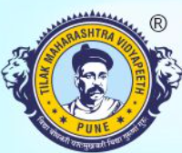

The origin of the Vidyapeeth dates back to pre-independence period – 1921 when immediately after the demise of Lokmanya Bal Gangadhar Tilak, his follower Mahatma Gandhi mooted the idea of establishing a university in his memory. As we all are aware one of the postulates of the four fold formula conceived by Lokmanya Tilak was National Education and the other three being Swaraj, Swadeshi and Boycott. The delegates of the first Maharashtra Provincial Conference on 6th May 1921 under the presidentship of Shrimat Shankaracharya of Karveer Peeth decided to have National University in Maharashtra and thus the present day Tilak Maharashtra Vidyapeeth (TMV) was established.
During the pre-independence period, degrees awarded in the faculties of Arts, Management, Commerce and Engineering as well as the research works in Sanskrit and Ayurveda were world acclaimed and recognized. Similarly, in the post-independence period, the degrees of Tilak Maharashtra Vidyapeeth were equivalent to the degrees of other statutory universities.
Though late, it was only in the year 1987 that the University Grants Commission took cognizance of significant work of TMV in the fields of Sanskrit, Ayurveda, Social Sciences and Distance Education and thereby on its recommendations, the Government of India conferred the “Deemed to be University” status upon Tilak Maharashtra Vidyapeeth. With this conferrment of “Deemed to be University” status, the Vidyapeeth gained recognition at national level.
The concept of Non-formal Education was first discussed at national level only in the year 1985 and thereby the TMV contributed to this national vision by launching distance education course (B.A.). TMV takes pride in the fact that distance education programme was launched prior to the establishment of IGNOU at national level and YCMOU at state level.
Since establishment, TMV had very rich human resources, however, being a public funded university, Vidyapeeth could not make any significant progress owing to financial constraints. It is true that on one hand the Vidyapeeth had limited resources and on the other hand less support was rendered by Central/State Government.
With the conferrment of “Deemed to be University” status in 1987 the Vidyapeeth received its first financial assistance for the development of campus during the last phase of VIII Plan and simultaneously the State Government also sanctioned salary component for few teaching (17) and non-teaching posts (52). Since then the Vidyapeeth has also received financial support for development/research purpose from UGC/State Government. It is to be noted that for smooth and efficient functioning of the Vidyapeeth, requisite teaching and non-teaching staff were employed from its own funds.
Considerable research work has been conducted by the faculties of Sanskrit, Social Sciences and Ayurveda with its respective prime focus on –
Later in the year 2000, the Distance Education Council (DEC), New Delhi gave its recognition and offered financial assistance for distance education programmes.
By the year 2004 there happened to be boom in the fields of computer and management and thereby the student strength of the Vidyapeeth for courses in these fields also increased. Now with prime focus on its core fields i.e. Sanskrit, Ayurveda, Social Sciences, intact, Vidyapeeth re-oriented itself in order to offer new courses that cater to the student community and meet the demands of industrial sector by seeking requisite approvals from statutory councils – NCTE / AICTE / INC / MSCOTP / MSBTE and BCI the Vidyapeeth launched B.Ed. & M.Ed. / BHMCT / B.Sc. Nursing / BPT / Diploma Engineering / LL.B. courses respectively.
Vidyapeeth has always adhered to the MHRD/UGC/DEC guidelines. With regard to the UGC policy related to access, equity, quality, research and so on, the Vidyapeeth has tried its level best to reach the unreached. Now today Vidyapeeth has state-of-the-art infrastructure facilities, requisite qualified and dedicated faculties and administrative staff along with allied facilities to foster a positive learning environment.
Several eminent personalities such as Mahatma Gandhi, Jawaharlal Nehru, Dr. Zakir Husain, Dr. Shankar Dayal Sharma, Dr. Raghunath Mashelkar, Dr. Anil Kakodkar, Shri. Sharad Pawar, Shri. Pranab Mukherji and others during their visit to the Vidyapeeth campus have appreciated its uniqueness, amicable culture and rigirous research work.